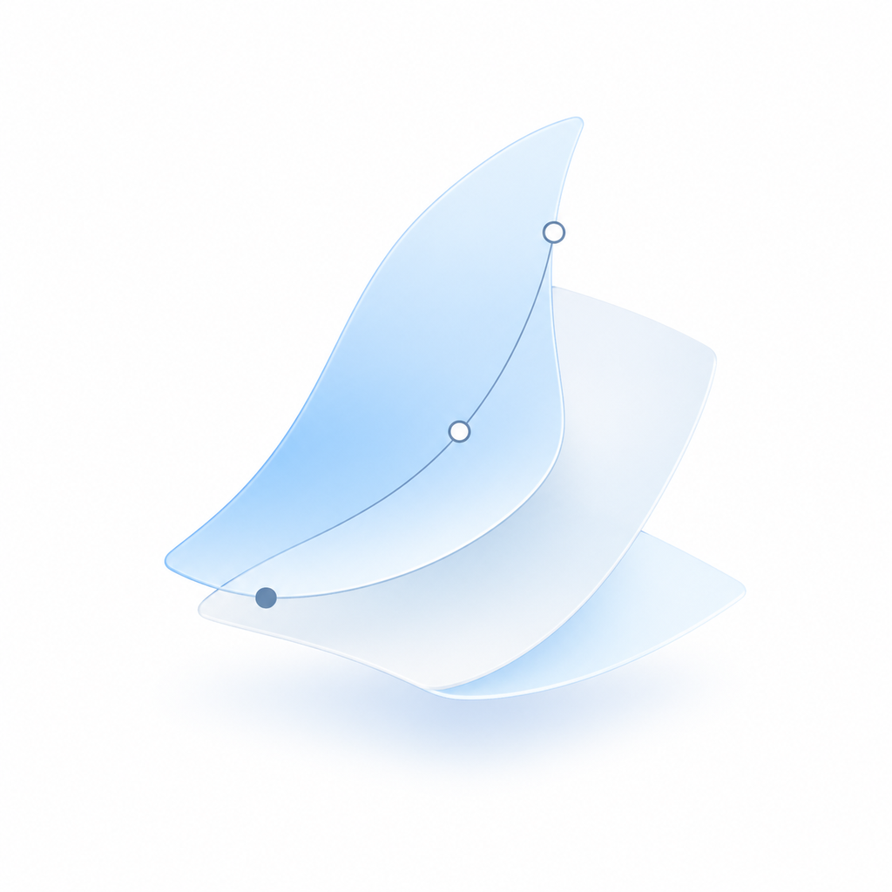

VELAWorkflow environment layer
VELA provides compatible local context: project facts, evidence traces, validator outputs, and runtime state.
HELM Desktop Command Dashboard
HELM reads local project state, evidence traces, deliverable indexes, and environment health. It gives you a clean view of what is ready, what is blocked, and what Codex should handle next.

VELAVELA provides compatible local context: project facts, evidence traces, validator outputs, and runtime state.
HELM reads local state, surfaces readiness, opens safe paths, and prepares a precise handoff for Codex.
First Run
HELM does not ask you to type prompts or create a project inside the app. It reads local project context after Codex has prepared the facts in your project folder.
Public Boundary